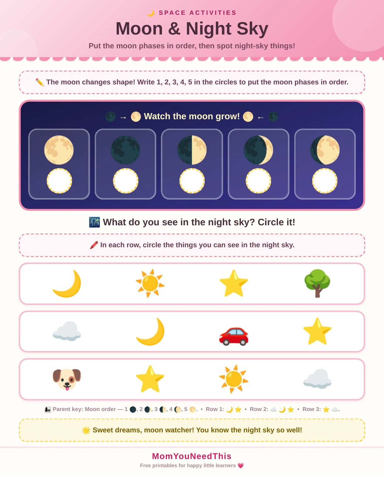

🌙🌌 The Moon & Night Sky Hello, Moon
Quick Answer
This free printable moon and night sky activity helps toddlers and preschoolers (ages 2–5) understand the moon's changing shapes — its phases — and the honest secret behind them: the moon does not change at all; we simply see different amounts of its sunlit half as the month goes by. Kids order the moon phases, spot night-sky objects, and meet the animals that own the night. Download and print at home with no signup needed.
The moon changes shape and glows in the dark sky. These calming bedtime-friendly activities explore moon phases, nighttime animals and the quiet beauty of night.
The moon is the rare school topic that schedules its own homework: it hangs over the bedtime routine, changing a little each night, free to observe from any window. A child who checks it nightly for a month has done real astronomy — patient, repeated observation of the same object — which is why this page is built to live beside the bed, not the desk.
🌙🌌 Explore The Moon & Night Sky
Order moon phases, spot night-sky objects, and learn why the moon seems to change shape.
💡 How To Use This Activity
Print these pages in the evening and fold them into the wind-down: check the real moon from a window first, then find tonight's phase on the sheet. The nighttime animal pages make an ideal last quiet activity before bed. The print button opens the full-size page in a new tab if you prefer to print from there.

🖨️ Download Your Free The Moon & Night Sky Printable
Order moon phases, spot night-sky objects, and learn why the moon seems to change shape. Print it out, grab the crayons, and you're ready — no signup needed.
⬇️ Download Free Printable 🖨️ Print🎁 Free printable for toddlers & preschoolers
🌙 Why The Moon Changes Shape
The moon makes no light of its own. It is a ball of rock lit by the sun, like a ball held beside a lamp: one half is always bright, the other always dark. As the moon travels around Earth over about a month, we see the bright half from different angles — and that changing view is the phases.
New moon — the bright half faces away from us; the moon is up there but invisible. Crescent — a sliver of the lit half swings into view, a smile or a fingernail of light. Half moon — we see exactly half of the lit half. Full moon — the whole lit face turns toward us, and the night is bright enough to cast shadows.
The lamp-and-ball demonstration makes it click in one minute: in a dark room, hold a ball beside a lamp and walk slowly around it, watching the lit part change shape. Your child has just held the moon's whole month in their hands.
While you are out there: the night belongs to other tenants. Owls hunt by hearing so sharp they can find a mouse in total darkness; bats navigate by echoes; moths do the pollinating night shift that bees do by day. The moon pages' nighttime animals are not decoration — the dark is a habitat.
❓ The Moon & Night Sky FAQs
What activities are included in The Moon & Night Sky?
This page collects our free moon and night sky printables in one place: ordering the moon phases, spotting night-sky objects, and learning why the moon seems to change shape (it does not — our view of its sunlit half does). Download the printable below and start learning right away.
Are these activities really free?
Yes — every printable on MomYouNeedThis is 100% free to download and print. No signup, no payment, just tap the download button. Print the phase-ordering page twice if you can — once to learn, once a month later to check against the real moon. Print the phase-ordering page twice if you can — once to learn, once a month later to check against the real moon.
How do I use these activities with my child?
Print these pages in the evening and fold them into the wind-down: check the real moon from a window first, then find tonight's phase on the sheet. Repeat across the month — the same window, the same check — and let your child announce how the shape has moved. The nighttime animal pages make an ideal last quiet activity before bed.